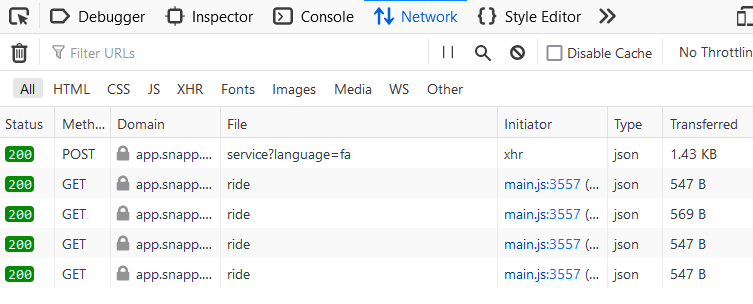
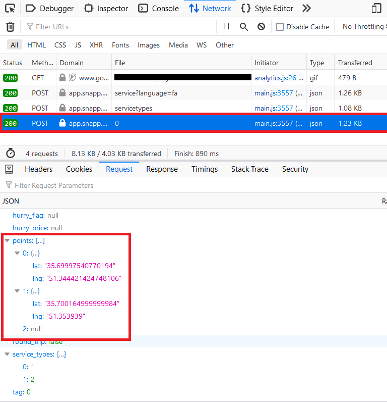
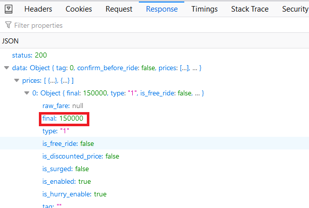
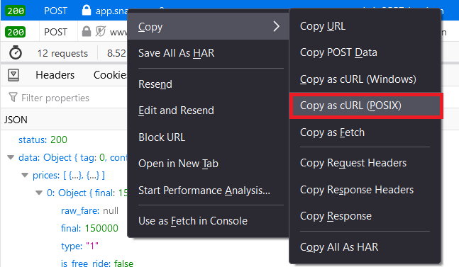
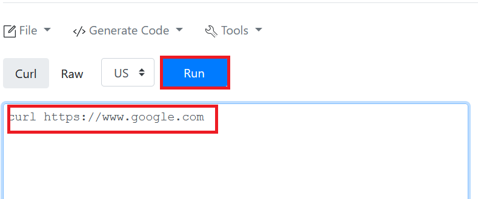
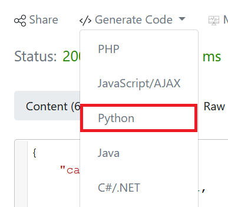

یکی از کار هایی که همیشه دوست داشتم انجام بدم این بوده که یه برنامه بنویسم که مختصات نقطه مبدا/مقصد در اسنپ رو بهش بدم و بهم بگه کجا رو به عنوان مبدا/مقصد انتخاب کنم که کمترین هزینه ممکن رو برام داشته باشه. مثلا بهش بگم من تا ۱۰۰ متر هم میتونم پیاده برم تا نقطه مبدا/مقصد و بر اساس اون بهم پیشنهاد بده.توی این مقاله صرفا میخوام به صورت خلاصه مراحل انجام این کار رو توضیح بدم. حالا شما اگر حوصله داشتید اون رو برای خودتون توسعه بدید و بهش فیچر اضافه کنید. من فقط میخوام ایده رو بگم و برم :)اولین کاری که باید انجام بدید اینه که وب اپلیکیشن اسنپ رو باز کنید :
من از فایرفاکس استفاده میکنم. روی صفحه راست کلیک کنید و Inspect رو بزنید. تب Network رو باز کنید. میبینید که یه سری ریکوئست داره ارسال و دریافت میشه.

یه نقطه رو به عنوان مبدا سفر مشخص کنید و تایید مبدا رو بزنید. بعد یه نقطه رو به عنوان مقصد انتخاب کنید اما تایید مقصد رو الان نزنید! اول برید از تب Network روی آیکون سطل زباله گوشه بالا سمت چپ کلیک کنید تا ریکوئست هایی که تا الان ارسال شده حذف بشه. حالا بدون اینکه نقشه رو تکون بدید تایید مقصد رو بزنید. حالا از تب Network دنبال یه ریکوئست Post بگردید که مثل تصویر زیر باشه :

اینجا چی داریم؟ همونطور که توی بخش Request با کادر قرمز مشخص کردم، اینجا دو تا مختصات برای سرور های اسنپ ارسال میشه. lat مخفف Latitude و به معنای عرض جغرافیایی و lng مخفف Longitude و به معنای طول جغرافیایی است. دو تا نقطه اول مختصات مبدا و دو تا نقطه دوم مختصات مقصد هستند. از تب Response هم یه چیز دیگه رو هم باید چک کنید که مطمئن بشید همون ریکوئستی است که دنبالش هستید :

چک کنید که در Response حتما final مقدار داشته باشه. مثلا اینجا 15 هزار تومنه. حالا روی ریکوئستی که پیدا کردید راست کلیک کنید، از منوی Copy گزینه Copy as cURL (POSIX) رو انتخاب کنید.

حالا وارد سایت زیر بشید و آدرسی که کپی کردید رو اونجا paste کنید و بعد هم Run رو بزنید.

حالا از سمت راست Generate Code رو بزنید و زبانی که بلدید رو انتخاب کنید. من پایتو رو انتخاب میکنم :

یه نمونه از این کد رو توی gist زیر گذاشتم اما بخش Authorization و Cookie رو حذف کردم که کسی شیطونی نکنه 🙂
از این کد فقط نیاز داریم که با data بازی کنیم 🙂
همونطور که میبینید اینجا همون lat و lng رو داریم اما اینجا میتونیم به هر شکلی که میخوایم تغییرش بدیم و بعد ریکوئست رو برای اسنپ ارسال کنیم. کاری که ما میخوایم انجام بدیم چیه؟ مثلا بگیم در شعاع ۱۰۰ متری از نقطه مبدا، کجا رو بزنم که کمترین هزینه ممکن رو داشته باشه؟سوالی که اینجا پیش میاد اینه که من به lat و lng که اعداد اعشاری هستند چقدر اضافه کنم که مثلا بشه ۱ متر؟ توی لینک زیر این موارد رو تقریب زده :
مثلا اگر 0.00001 به اعداد lat و lng اضافه کنید میشه تقریبا 1.11 مترحالا کد زیر رو در نظر بگیرید :
هدف این کد چیه؟ ما یه شعاعی رو تعیین میکنیم. مثلا اینجا من radius که همون شعاع است رو گذاشتم ۱۰۰ متر. حالا میخوایم در شعاع ۱۰۰ متری نقطه مبدا یه تعدادی نقطه رو انتخاب کنیم و اون رو برای سرور اسنپ ارسال کنیم و ببینیم قیمت چقدر تغییر میکنه. در واقع یه دایره داریم به شعاع ۱۰۰ متر که مرکز این دایره نقطه مبدا ما قرار داره. میخوایم روی محیط این دایره چند تا نقطه رو انتخاب کنیم. من اینجا ۸ تا نقطه رو انتخاب کردم. این نقاط رو به کمک dimensions پیدا میکنم. چه جوری؟ مثلا عنصر اول dimensions رو گذاشتم [0,1]یعنی چی؟ یعنی میخوام lat صفر متر تغییر کنه (تغییر نکنه!) و lng هم ۱ متر به سمت راست بره. اگر -1 بود چی میشد؟ آفرین! میشد ۱ متر به سمت چپ!متغیر های init_lat و init_lng هم نقاط مبدا ما هستند که میخوایم در شعاع ۱۰۰ متری از اونها تعدادی نقطه رو انتخاب کنیم. بعد یه حلقه for گذاشتم که دونه دونه این dimension ها رو انتخاب کنه. داخل حلقه چه اتفاقی میافته؟
گفتم که هر 0.00001 واحدی که به lat و lng اضافه کنیم میشه 1.11 متر. من اینجا میخوام فاصله 100 متری رو محاسبه کنم. پس 0.00001 رو در radius ضرب میکنم. میشه 111 متر ولی مهم نیست! حالا dim[0] و dim[1] چیه؟ چند خط بالاتر یه مثال زدم. نشون میده چند متر باید به سمت راست/چپ بریم یا حتی نریم!بعد از اینکه این محاسبات رو انجام دادیم، درخواست رو به سرور اسنپ ارسال میکنیم و قیمت رو در متغیر price ذخیره میکنیم. بعدش مقادیر رو داخل یه دیکشنری ذخیره میکنیم. خط آخر هم بر اساس قیمت به صورت صعودی مرتب میکنه و چاپ میکنه!آپدیت شنبه، ۲۹ آبان ۱۴۰۰ :یکی از دوستان زحمت کشیدند و کد کاملش رو نوشتند :
آپدیت جمعه، ۳ دی ۱۴۰۰ : من چون میخواستم با گوشی دکمهای اسنپ بگیرم یه سرشماره پیامکی خریداری کردم و اون رو متصل کردن به یک URL که تمامی پیامک هایی که به اون سرشماره ارسال میشه به URL مربوطه فوروارد بشه و من اونجا هر پردازشی که میخوام انجام بدم.
آپدیت شنبه، ۲۰ فروردین ۱۴۰۱ :
برای این کار از سرویس زیر استفاده میکنم :
حملات توپخانه ای
در این مقاله صرفا قرار بود ایده کلی گفته بشه. کار های زیادی میشه انجام داد. خودم بعضی هاش رو انجام دادم. اما اینجا فقط روش پایهای رو گفتم. من فرض میکنم شما برنامه نویس هستید و میتونید بر اساس نیازتون کد رو تغییر بدید و فیچر های مختلف رو بهش اضافه کنید.
شما این کار رو قبلا انجام دادید؟ آفرین! روش شما بهتره؟ وای چه خفن! خب اینجا چیکار میکنی زاکربرگ جوان؟
این روش به درد نمیخوره؟ عملی نیست؟ آخی، به نظر میرسه اینجا گیر افتادی. بذار نحوه بستن مرورگر رو بهت یاد بدم :
میشه با این ایده یه کسب و کار راه انداخت؟ Good Luck 🙂
nb.neighbours()
| title | date | |
|---|---|---|
| prev | انتخاب بستهٔ اینترنت همراه به کمک مسئلهٔ کولهپشتی! | ۱۴۰۰/۰۴ |
| next | سفر به دنیای شمارهٔ پلاک خودروها! | ۱۴۰۰/۰۷ |